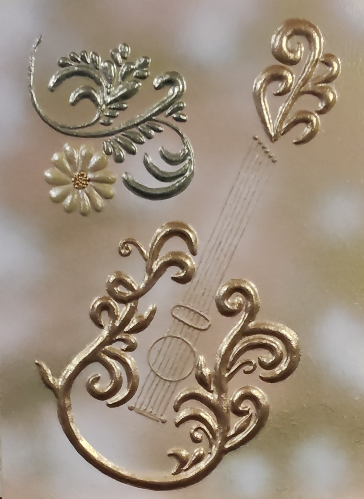

NICOLETA FILIP ART
VIBRACIÓN
Composición ornamental en relieve protagonizada por una guitarra, rodeada de elementos vegetales y decorativos que integran música, volumen y ornamentación.
Sobre la obra
VIBRACIÓN presenta una guitarra como elemento central de la composición, integrada con motivos vegetales y formas curvas de carácter ornamental.
El relieve aporta una marcada dimensión tridimensional a la superficie y permite que la luz resalte los distintos niveles, contornos y detalles decorativos.
Presentación artística
La combinación de la guitarra con los elementos ornamentales establece un diálogo entre música y artesanía, mientras que el modelado en relieve aporta profundidad visual y táctil.
Los acabados metálicos y las formas curvas refuerzan el carácter decorativo de la pieza y generan contrastes de luz sobre la superficie.
Ficha técnica
- Año
- 2026
- Dimensiones
- 30 × 40 cm
- Soporte
- Madera
- Técnica
- Técnica estándar
- Categoría
- Objetos y símbolos
Si deseas recibir información sobre esta obra, puedes solicitarla directamente.
SOLICITAR INFORMACIÓN →